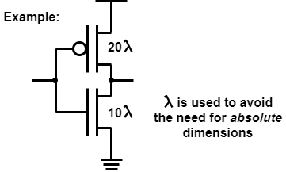
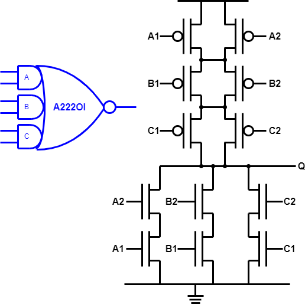

Gates are formed using serial and parallel combinations of transistors:
Basic CMOS gates are always inverting (NOT, NAND, NOR)
They provide a load on their inputs and actively drive their output.
The impedance of a transistor ‘switched on’ is inversely proportional to its gate width. This should be fairly obvious: double the width and there is twice as much material to carry the appropriate current density, thus twice the current.
The impedance of the transistor is (roughly) proportional to the gate length; again this should be apparent from the geometry. Normally (but not always) transistors are made with the minimum feasible gate length.
Two ‘on’ transistors in series are roughly equivalent to one transistor of twice the length. (Again, check the geometry.)
Thus a transistor ‘stack’ of two transistors will have twice the impedance of a single transistor, ‘weakening’ the gate's drive strength. To counteract this the transistors' widths may also be doubled. Alternatively, two parallel transistors (FETs) can be used.
Bigger transistors:
pMOS channels are less conductive than nMOS ones (“lower carrier mobility”). As a ‘rule of thumb’ a pMOS transistor needs to be wider than its nMOS equivalent to provide similar channel impedance (or its reciprocal ‘transconductance’). Thus for an inverter, to provide equal rising and falling output edges:
How much wider?
This is hard to answer here, since the publicly available information
is obscure and, sometimes, contradictory! Historically, making pFETs
about twice the width of nFETs was a fairly common rule (the author
has done this, multiple times 🙂).
This is appropriate at larger feature sizes such as 350 nm.
2× has been assumed here for
illustrative purposes.
One school of thought, prevalent on the Internet, is that below these sizes (e.g. 90 nm vicinity) 2½:1 or 3:1 is more appropriate. On the other hand it is reported that techniques such as straining are more effective for pFETs thus reducing the ratio again to 2:1 or 1½:1. Without personal experience it's hard to comment definitively, although pFETs being larger than their complementary nFETs still appears to hold true.
Below around 22 nm planar transistors become inappropriate,
anyway. The physics doesn't change but the structures change shape:
more on that later.
To provide equal switching edges from gates, transistor widths are increased proportionate to the depth of the series stack they are in, from (appropriate) power supply to output. Parallel transistors are not decreased in width: the assumption is that (worst case) only one input change (thus one transistor) will be responsible for the output change†.
Thus, for NAND gates:

The input (capacitive) load increases proportionately.
NOR gates are ‘worse’ because the pMOS transistors scale from a larger base; thus NAND logic is slightly preferable when feasible.
†Reasonable, if you think about it.
MOSFET function depends on its charge carriers (electrons & holes): their density and mobility. Increasing carrier mobility can enhance switching speed and reduce power consumption, so this technique is of interest!
One way of increasing carrier mobility is to (physically) strain the silicon crystal lattice from its native atomic spacing. If you're sufficiently interested you can look up ways this can be done; here we can be content with introducing the terminology.
Instead of manufacturing the transistors on the surface of bulk silicon they can (at added cost) be ‘backed’ by an insulating layer. This can offer a whole list of (potential) advantages, such as better radiation hardening – significant in, for example, satellite applications.
As an example, one term encountered in this space is Silicon on Sapphire (SOS), where a thin silicon layer is grown on an artificial sapphire substrate. There a many other approaches which you can research, if interested.
Gates are formed using serial and parallel combinations of transistors:
aoi21 – and-or-invert
if B high then Q=0
else if A1 and A2 high then Q=0
else Q = 1

alternatively
if B=0 and ((A1 or A2)=0) Q = 1
else Q=0
Basic CMOS gates are always inverting (NOT, NAND, NOR)
They provide a load on their inputs and actively drive their output.
By using different, complementary series and parallel structures, more complex logic functions may be performed in a single evaluation stage. It is common for CMOS cell libraries to include a number of these gates.
nMOS transistors are in series for each AND function and then the stacks are paralleled for the NOR. Any specific AND pair of inputs being high will disconnect the pull-up tree and pull the output low.
The complement has parallel pMOS transistors for the AND (either low may pull the output high) stacked for the NOR function, which requires at least one low in each pair.
In a generalised AOI structure, different numbers of transistors (inputs) may be present in each ‘tree’ (see previous figure for example).
… is basically an inversion of the AOI, swapping pMOS and nMOS
structures.
An example of how structures can be further combined. The theoretical limit will be the number of transistors which can reasonably be ‘stacked’. However because there are many such possible gates they are not ‘all’ likely to be available in a particular library.
Puzzled? There's a more explicit
description here.

This figure shows the transistor-level schematic of a specialised structure based on a complex gate and optimised to exploit common inputs. It has only two series transistors in each ‘tree’. Fewer series transistors ⇒ smaller (width) transistors ⇒ less capacitive load.
In increasing order of difficulty, can you:
Have a proper go before looking at the answer.
Up to CMOS index.
Back to CMOS layout.
Forwards to other CMOS structures.